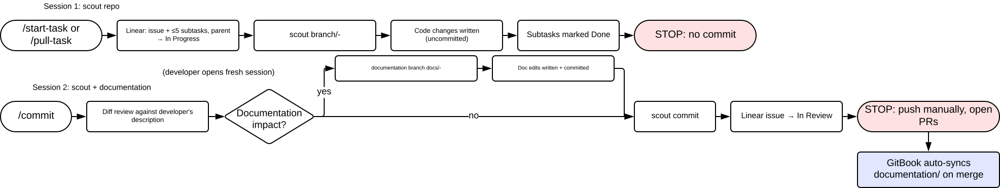

Documentation policy, automation pipeline, and pilot repo.
Docs are the first thing to fall behind. Here is what that costs us, and what we want instead.
Required
Not required
The developer runs /commit at commit time. Claude reviews the working diff against the developer's description, decides whether documentation impact exists, and proposes documentation updates for approval before committing.
The same code reviewer approves both PRs together. No separate doc reviewer.
When documentation impact exists, two parallel commits are produced, keyed off the same Linear issue ID:
feat/SCO-142-add-oauth-login)Visionary-Solutions/documentation (e.g. docs/SCO-142-add-oauth-login)If a change has no documentation impact, /commit skips the doc branch. The reviewer verifies the absence is honest in the same pass as the code review.
Single layer. Visionary-Solutions/documentation is the documentation source of truth. Code repos no longer carry their own docs/.
documentation/
├── user/ # outside-facing, public GitBook space
│ └── <Product>/ # e.g. Scout/, VisionProcessor/
└── dev/ # on-team, private GitBook space
└── <Product>/
Pick the folder by audience. Use user/ for external consumers, sales, or stakeholders. Use dev/ for internal developers across teams.
Each product gets its own subfolder under each audience. Cross-cutting documentation that isn't owned by a single product (architecture, decisions, cross-service interfaces) lives at the audience level, for example dev/Architecture/ or dev/Decisions/.
docs.visionaryauto.ai/<service>/..., not relative file paths. URLs survive repo moves and environment transitions; paths do not./commit is the gate. The developer cannot complete the commit step without making an explicit decision on documentation impact. Skipping /commit (committing manually with git commit) is a policy violation; the reviewer flags PRs that didn't go through it.
When documentation impact exists, both PRs (code repo + documentation/) are approved as a unit. No CI gate in v2.
GitBook auto-syncs from Visionary-Solutions/documentation to docs.visionaryauto.ai.
user/ at the rootdev/ under a private spaceTwo sessions, two repos. The Linear issue ID is the connective tissue between code changes and documentation changes.

From /start-task to /commit, end to end. DEV-1075
/start-task (or /pull-task). Claude creates a Linear issue, generates up to five subtasks, transitions the parent to In Progress, and cuts the scout branch./commit. Claude reads the diff, parses the Linear issue ID from the branch name, and reconciles the diff against the developer's description.Visionary-Solutions/documentation, and the doc commit message alongside the scout commit message in a single approval block.documentation/ and the docs publish to docs.visionaryauto.ai.v2 is on the ratification track. Fleet adoption is pull based.
Visionary-Solutions/documentation as the single doc source of truthvs-users (public) and vs-docs (private)/commit walkthrough recorded end to end (see slide 5)/start-task, /pull-task, /commit as .claude/commands/ DEV-1106documentation/ with the v2 folder structure DEV-1107docs.visionaryauto.ai DEV-1104 DEV-1086Three decisions pace the fleet rollout. None block the demo pilot.
Three cleanups before the domain swap:
wiki-content repo as archive-onlyRemoves the duplicate-space confusion in GitBook and signals the canonical-direction shift to anyone reading along. Brings GitBook to a clean state for the domain cutover.
Build /start-task, /pull-task, and /commit as .claude/commands/ in scout and any code repo onboarding the policy.
Gates the v2 pilot. Without the commands shipped, there's no enforcement gate, only the policy text. Each repo opts in by installing the commands.
Point visionarywiki.gitbook.io at the GitBook vs-users site. A DNS CNAME swap, no content moves.
Once it lands, the cross-service URL convention from §4 resolves to a real public domain. Every published doc gets stable external links instead of placeholders.